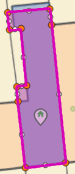
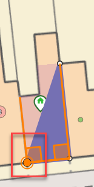

If you are changing the shape of an existing polygon first select the polygon using one of the select tools and the nodes will be displayed e.g.
 |
 Polygon editing example |
The larger orange nodes are the existing nodes for the polygon which you can select with the mouse and drag them to a different location. If you need more nodes you can see smaller white node halfway between each current node which may also be selected and dragged to a new location. When you are moving nodes you will have the option to snap to the underlying map features if this has been enabled for the layer. You may also select an existing node and press the Delete key on your keyboard to delete a node or move the entire polygon to a different location.
You may override the default snapping by selecting Sketch Settings. Note: If you need to move the map whilst you are drawing your polygon simply hold down the left mouse button and drag the map in the direction you require and then you can continue drawing.
If you have selected the Draw a polygon tool then click on the map for each node of your polygon and double click when you have finished. You may then move or delete nodes as you would if you were editing an existing polygon (see above). If you have an underlying polygon layer (maybe one that you have uploaded using the Upload shp file tool) that you can snap to when drawing your polygon you will see the snapping box displayed as you hover over an existing node. See the area outlined in red in the image below.
 |
Polygon snapping example |